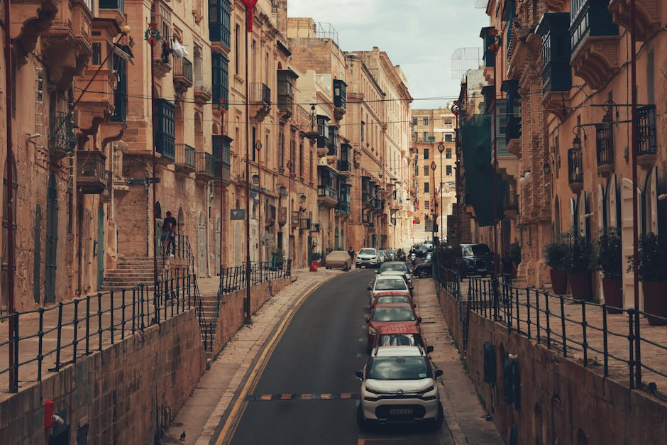
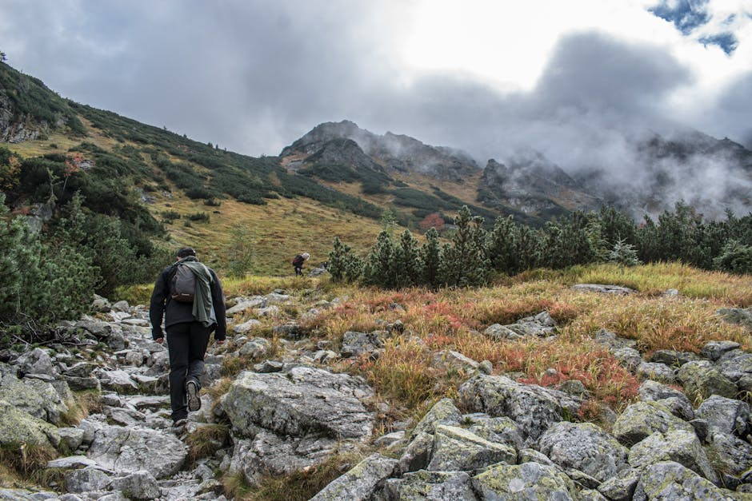

La tua bussola editoriale per esplorare destinazioni turistiche esclusive, pianificare itinerari indimenticabili e riscoprire la bellezza nascosta del mondo.
Curiamo contenuti editoriali per guidarti verso le migliori esperienze, trasformando ogni lettura nel primo passo del tuo prossimo viaggio.

Pianifica le tue fughe perfette con i nostri itinerari viaggio dettagliati. Guide passo-passo testate sul campo per ottimizzare il tuo tempo e vivere esperienze autentiche ovunque tu vada.

Riscopri la bellezza di casa. Dalle coste assolate del sud alle vette alpine, offriamo approfondimenti imperdibili per organizzare le tue prossime vacanze Italia all'insegna della meraviglia.
Immergiti nella storia e nella cultura esplorando incantevoli borghi italiani e maestose città d'arte. Ti portiamo oltre i soliti percorsi per rivelarti i segreti del patrimonio artistico.
Cosa dicono i nostri lettori delle nostre guide alle destinazioni turistiche.
"Grazie a Tacnodelayer ho scoperto destinazioni turistiche che non avrei mai considerato per i miei fine settimana. Articoli scritti con vera passione."
— Marco T.
Viaggiatore Frequente, 2026
"Gli itinerari viaggio proposti sono perfetti, dettagliati e ricchi di spunti autentici. Mi hanno salvato decine di ore di pianificazione."
— Giulia S.
Appassionata di Fotografia, 2026
"La sezione dedicata ai borghi italiani mi ha fatto innamorare di nuovo del nostro paese. Informazioni preziose che non si trovano altrove."
— Luca R.
Lettore Assiduo, 2026
Tacnodelayer nasce dalla profonda passione per l'esplorazione e la narrazione. Siamo una rivista di viaggi e itinerari dedicata a chi cerca l'autenticità in ogni spostamento, rifiutando il turismo omologato.
Il nostro obiettivo è selezionare e raccontare le migliori destinazioni turistiche, guidandoti attraverso reportage curati, consigli pratici e approfondimenti culturali. Che tu stia pianificando un grande viaggio intercontinentale o un weekend tra le città d'arte, la nostra redazione lavora per offrirti l'ispirazione necessaria per partire.
Scopri i nostri contenutiTutto ciò che devi sapere sulla nostra rivista di viaggi.
La nostra redazione seleziona le mete basandosi su criteri di rilevanza culturale, bellezze paesaggistiche e autenticità. Cerchiamo di bilanciare mete iconiche con luoghi fuori dai circuiti di massa, per offrire sempre nuove prospettive ai nostri lettori.
In quanto rivista editoriale, pubblichiamo itinerari strutturati per i nostri lettori. Tuttavia, non operiamo come agenzia di viaggi, pertanto non creiamo pacchetti personalizzati su richiesta diretta per singoli utenti. I nostri articoli sono pensati per darti tutti gli strumenti per organizzarti in autonomia.
Copriamo il mondo intero. Sebbene abbiamo una sezione molto ricca e dettagliata dedicata alle meraviglie del nostro paese, esploriamo e recensiamo costantemente destinazioni internazionali, dai grandi classici europei alle mete esotiche più remote.
I borghi italiani danno il meglio di sé quando esplorati con lentezza. Consigliamo di viaggiare in auto o moto per avere la libertà di fermarsi nei piccoli centri, di parlare con i residenti e di assaporare la gastronomia locale seguendo i consigli presenti nei nostri reportage.
Sì, dedichiamo ampio spazio alle città d'arte. Le nostre guide non si limitano ai musei principali, ma includono passeggiate architettoniche, gallerie indipendenti e angoli storici meno noti, permettendoti di vivere la cultura del luogo in modo profondo e completo.
Hai domande sui nostri articoli o vuoi suggerire nuove destinazioni turistiche da esplorare? La nostra redazione è sempre alla ricerca di nuove ispirazioni. Compila il modulo per metterti in contatto con il team di Tacnodelayer.
Sede Redazionale
Via del Bosco Rinnovato 8
20057 Assago (MI), Italia
Presso Italiaonline S.p.A.